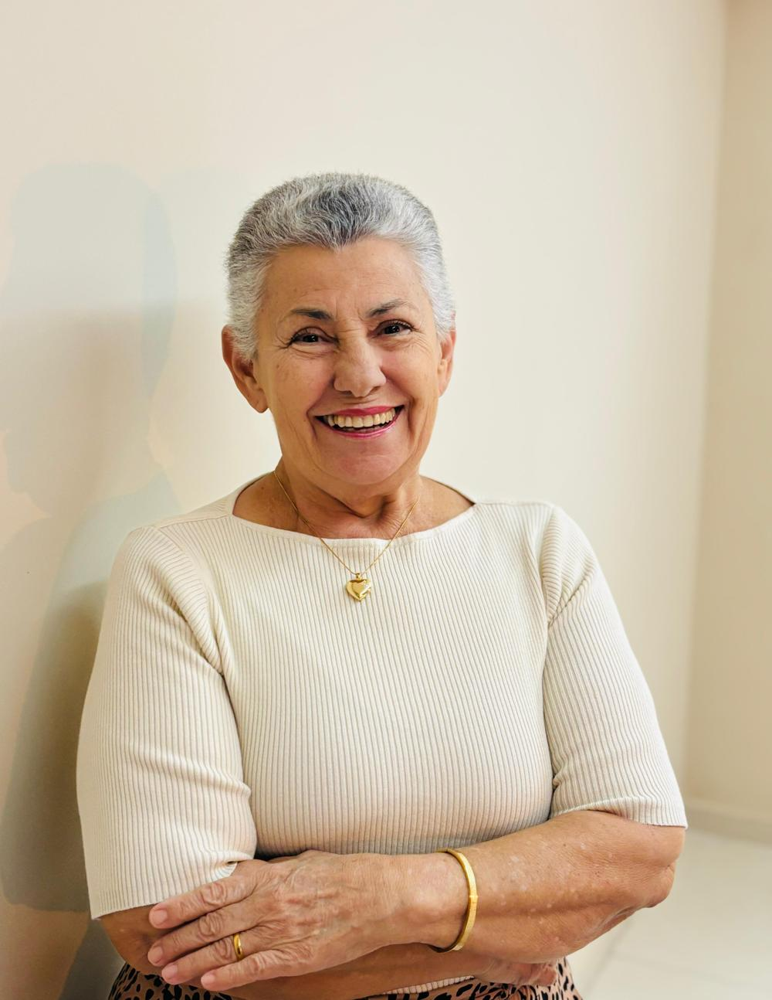
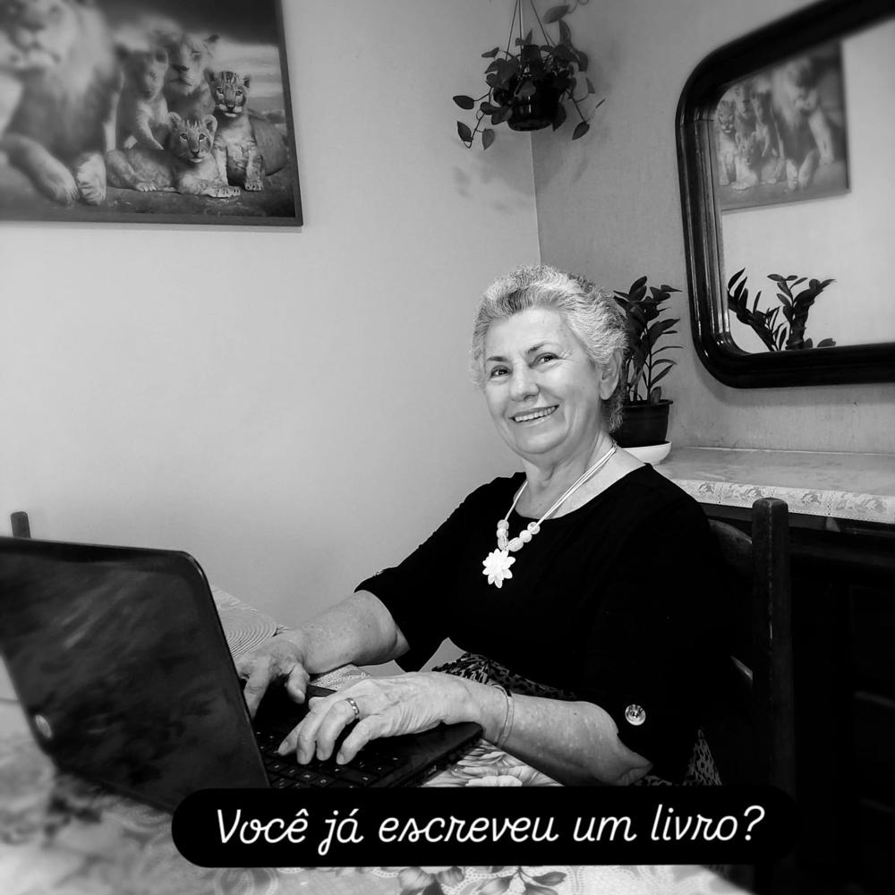
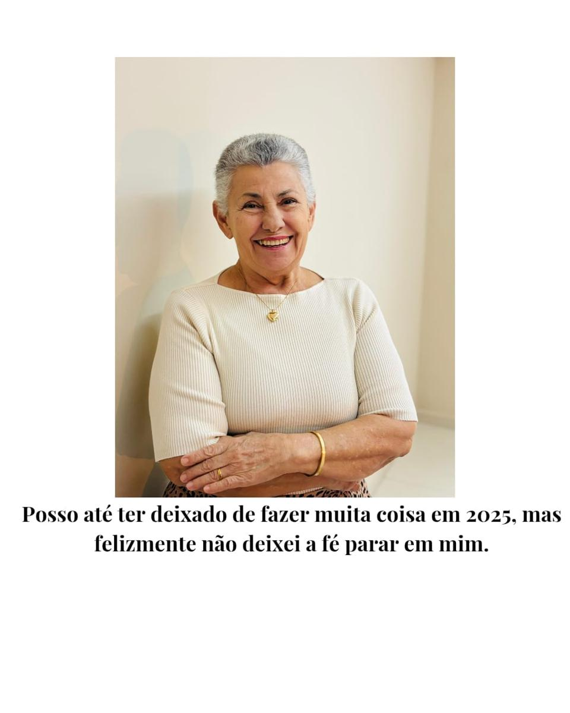
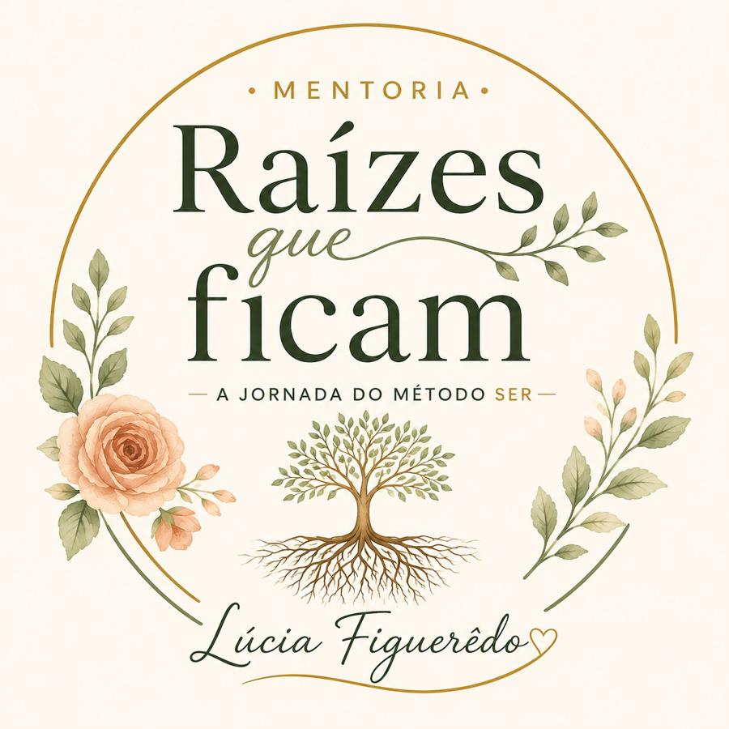
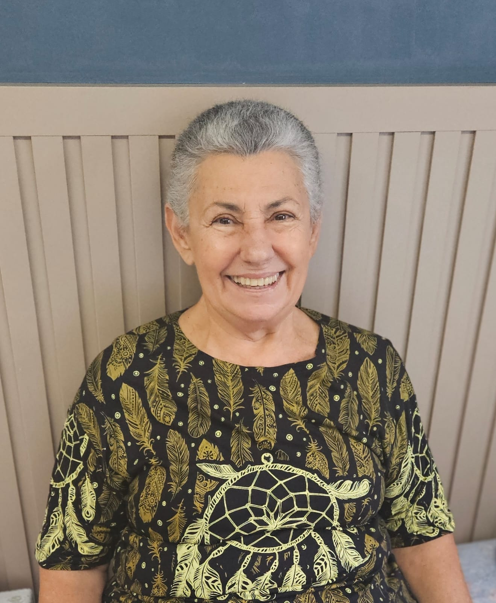

Lúcia Figuerêdo escreve a partir da experiência vivida: mais de trinta anos em sala de aula viraram poesia de memória, e uma vida de casamento virou a mentoria Raízes que Ficam.


Lúcia observou, registrou e transformou em poesia o que viveu: o chão da escola, as pessoas que ficaram, os silêncios e os retornos.
"Porque algumas lembranças resistem ao tempo. E, quando a memória encontra a poesia, tornam-se eternas."
Lúcia Figuerêdo dedicou mais de trinta anos à educação pública como professora, escritora, poeta e vice-diretora em escolas municipais e estaduais de Salvador e Lauro de Freitas. Casada, mãe de quatro filhos e avó, acredita que a educação continua viva sempre que uma palavra é capaz de tocar um coração.
O Método SER nasce da própria história de Lúcia: cinco décadas de casamento atravessando sonhos, crises e recomeços. Não são fórmulas prontas — é um caminho testado na vida real.
Cada etapa acompanha um momento diferente da relação: o início, a maturidade, e o que sustenta o amor nos dias difíceis.

Mais de trinta anos em escolas municipais e estaduais de Salvador e Lauro de Freitas — sala de aula como lugar de sonhos, vínculos e humanidade.
Décadas de memórias viraram poesia em "A Professora que Guardava Poemas" — um testemunho sensível de uma vida dedicada ao ensinar.
Cinco décadas de casamento deram origem ao Método SER e à mentoria Raízes que Ficam — hoje conduzida pessoalmente por Lúcia para outras famílias.
Duas obras, uma só voz: a de quem transforma vivência em ensinamento.
E se uma professora guardasse, durante três décadas, não apenas cadernos e planos de aula, mas também os poemas que nasceram entre encontros, despedidas, descobertas e afetos? Um testemunho sensível de uma vida dedicada ao ensinar.
Para construir uma família bem-sucedida através do Método SER. O livro que deu origem à mentoria Raízes que Ficam — um guia prático nascido de décadas de casamento e experiência real.
100% das avaliações são 5 estrelas — reunimos 9 depoimentos reais entre as 47 avaliações do livro "O Segredo das Bodas de Ouro".
"Parabéns Lúcia por compartilhar conosco sua história. Você nos mostra o lado forte da esperança, fé em Deus, amor, resiliência e coragem em mudar."
"Um livro encantador do início ao fim. Dona Lúcia consegue nos prender com sua história verdadeira. Em alguns momentos me emocionei muito. Ansiosa pelos próximos livros."
"Comprei de presente para minha filha que casou ano passado! Ela AMOU!!! Parabéns pelo livro!"
"Sobre amor amadurecido no tempo, escrita sensível e inspiradora. Recomendo a famílias e leitores que valorizam histórias reais e profundas."
"Excelente leitura!"
"Excelente livro."
"Leitura leve e uma excelente experiência."
"Excelente reflexão."
"Excelente leitura para uma reflexão sobre a vida."
Nascida do livro "O Segredo das Bodas de Ouro", a mentoria Raízes que Ficam acompanha casais e famílias que querem construir relações duradouras através do Método SER — com a mesma serenidade e experiência real que marcam a escrita de Lúcia.

